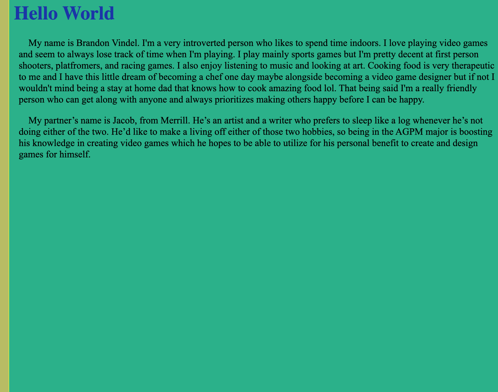
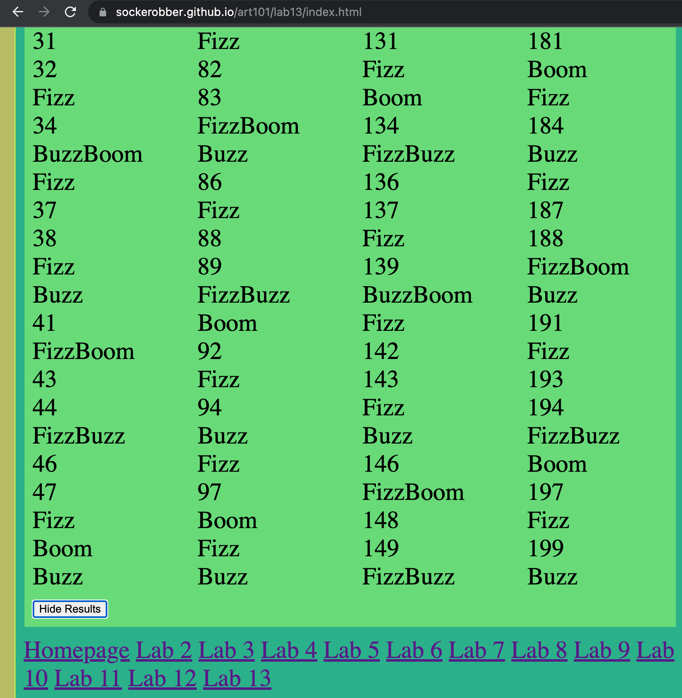

Lab 14 - Debugging Tools & Strategies
Challenge
With a partner, use your debugging knowledge to fix old assignments.
Problems
The only problems I really had were trying to find an error on my labs, I feel like since eveyrthing was already working I didn't really need to debug anything, however I did try to enhance some of the labs by experimenting on using buttons to link the results to another page.
Reflection
After completing this lab, I have to say it was quite simple just because I really only had to play around with some of the options and clean up my files to make them more readable.
Results
Below are my results for this lab!
Screenshots of labs being debugged
I added a button to my lab 2 that holds my results in another a page so when you push the button, the site goes to another page to show the results.
I thought it would be cool to see some kind of button that can hide my results and show them again upon pushing the button. I did use some help from chat gpt, but for the most part it looks really cool and I feel like my understanding for html/javascript has boosted these past few weeks.